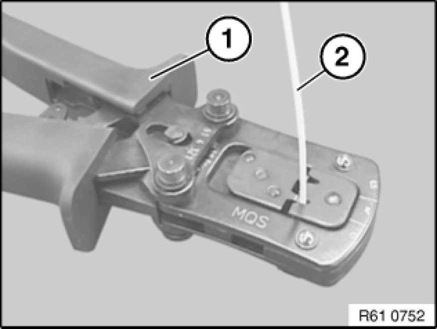

61 13 ... Crimping Micro Quadlock System Contacts (MQS)
61 13 ... - Crimping Micro Quadlock System contacts (MQS)

Special tools required:
- 61 4 320 61 4 320 Crimping Set with Pliers
To crimp MQS contacts, use pliers 61 4 321 (1) in conjunction with crimping head 61 4 324 (2) from crimping set 61 4 320 61 4 320 Crimping Set with Pliers.
Note:
Pliers (1) open automatically as far as they will go when handles are pressed together.
Open pliers (1).
Fold up contact carrier (2).
Insert MQS contact (3) in contact carrier (2).
Fold back contact carrier (2).

Note:
Follow procedure for cutting and stripping insulation 61 13 ... Cutting to Length and Stripping Insulation From Cables from cables.
Close pliers (1) one notch.
Insert stripped cable (2).
Close pliers (1) fully.
Open pliers (1).
Open contact carrier (2) gently and carefully remove MQS contact.
Note:
Check contact for correct crimping 61 13 ... Crimping Stop Parts.